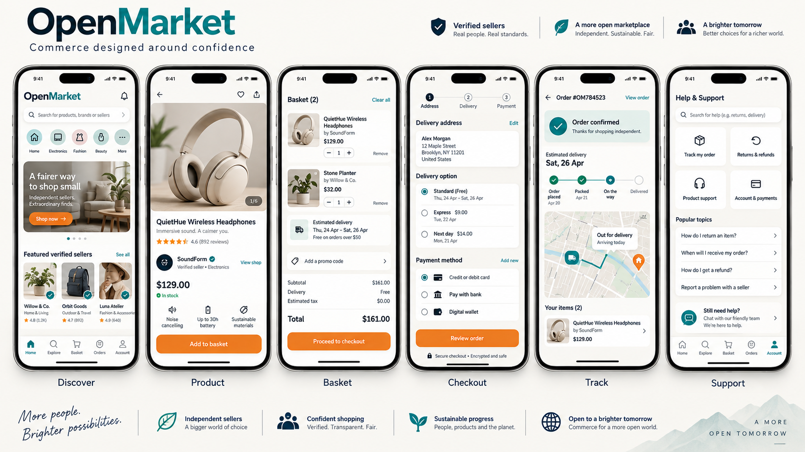

01
Unclear decisions
Customers may struggle to compare products, sellers, total costs and delivery options.
Featured product-design case study
Designing an accessible, mobile-first marketplace that connects product discovery, secure checkout, delivery tracking and customer support into one coherent experience.
Project overview
OpenMarket is an enterprise-quality marketplace concept designed for customers who want to discover trustworthy products, understand delivery options, complete secure payments and receive support without moving between fragmented systems.
The project considers customer expectations alongside commercial, operational, accessibility and technical requirements. It demonstrates how a senior designer can bring structure to a complex product challenge from initial definition through detailed design.
The challenge
How might we help customers discover reliable products, complete purchases confidently and manage deliveries through one accessible mobile experience?
01
Customers may struggle to compare products, sellers, total costs and delivery options.
02
Long forms, unexpected costs and weak payment feedback can cause customers to abandon a purchase.
03
After purchasing, customers need clear delivery updates, support and straightforward return options.
Design process
The process is designed to validate assumptions before investing in detailed interfaces.
Define the business context, intended customers, key journeys, assumptions, constraints and measures of success.
Conduct interviews and review comparable experiences to understand shopping behaviours, trust concerns and delivery expectations.
Organise findings into themes, provisional personas, journey maps and prioritised customer needs.
Develop information architecture and user flows covering discovery, checkout, payment, tracking and returns.
Create wireframes and interactive prototypes, then evaluate important tasks with representative users.
Apply feedback, strengthen accessibility, document reusable patterns and prepare specifications for implementation.
Provisional persona
This persona represents an initial design assumption and should be validated through real customer research.
Busy professional and frequent mobile shopper
Find reliable products, understand the complete cost and receive a purchase without unnecessary uncertainty.
Unexpected costs, unclear delivery information, complicated forms and difficulty reaching support after making a payment.
Primary journey
Early concepts
Low-fidelity concepts establish content priority, navigation and interaction before visual styling is introduced.
Product discovery
Product details
Secure checkout
Delivery tracking
Visual system
The proposed visual direction combines strong typography, generous spacing, confident colour and clear interaction states.
Final interface designs
The proposed interface connects product discovery, product evaluation, checkout, delivery tracking and customer support through one consistent design system.

Proposed solution
Useful categories, relevant filters and visible seller information support faster decisions.
Clear totals, delivery information and payment feedback help reduce uncertainty.
Status updates, delivery details and support options remain available after purchase.
Inclusive design
Outcome and reflection
OpenMarket demonstrates an end-to-end marketplace experience covering product discovery, comparison, checkout, payment, delivery tracking, returns and customer support.
The project shows how journey-level thinking, reusable interface patterns and accessibility considerations can support both customer confidence and scalable product delivery.
The next stage would be to conduct structured customer interviews and usability sessions, measure task completion and comprehension, and use that evidence to refine the proposed experience.